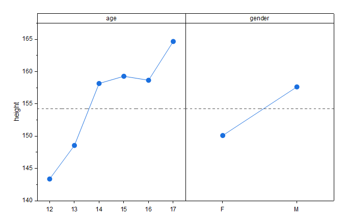

主効果プロットを作成するには、少なくとも1つのデータ列と1つの因子列を選択してください。
データを選択します。
メニューから作図 > 統計 : 交互作用プロットを選択して'plotmaineffectsダイアログを開く
MainEffect.OTPU(Originのプログラムフォルダにインストールされています)
主効果プロット は、複数のカテゴリカル変数（質的変数）を扱う際に非常に有用です。レベル平均の変化を比較することで、どのカテゴリカル変数が応答変数に最も影響を与えているかを視覚的に確認できます。
Originの主効果プロットでは、複数の応答データ列を入力データとして選択でき、複数のカテゴリカル変数を因子として指定できます。各入力列は、別々の主効果プロットとして描画され、各因子は、別々のグラフレイヤとして表示されます。各レイヤでは、因子の各水準における平均応答値がデータ点としてプロットされます。応答データ全体の平均値は、破線の基準線として表示されます。